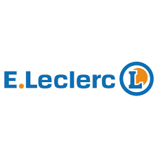
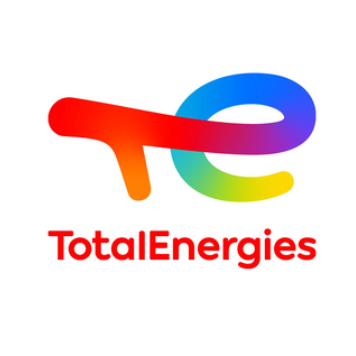
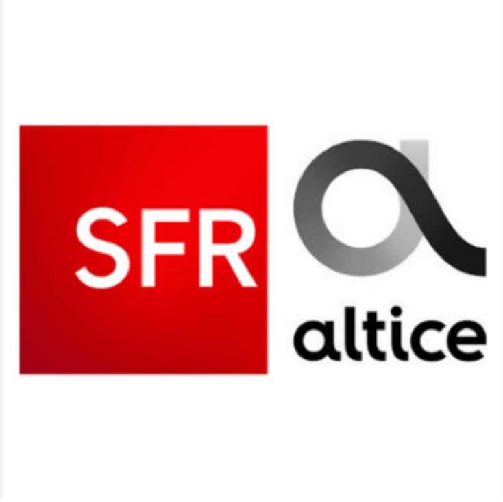
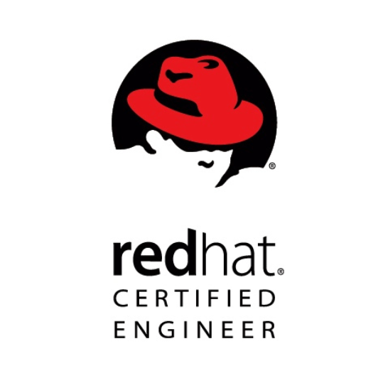
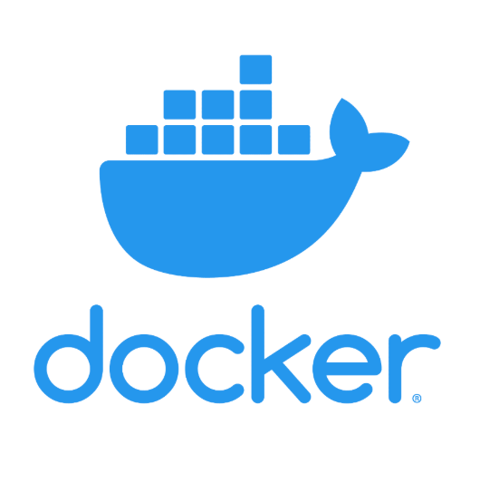
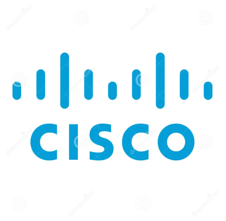

Expériences

Projets d'ingénierie et support N3 (Vmware ESXi, Linux, Docker, Kubernetes). Gestion du cycle de vie des licences Red Hat (Red Hat Satellite). Mise en place d'une chaîne CI/CD pour le provisionnement de serveurs (AWX, Packer, Vmware, Azure DevOps). Automatisation de mises à jour (Ansible, Vmware, Gitlab). Scripting (Bash, Python).

Support N2/N3 Linux et virtualisation. Amélioration continue et optimisation des processus de production (Jenkins, Tomcat, Red Hat). Gestion des déploiements (Puppet). Ingestion de données de logs, agrégation de métriques et monitoring (Elastic stack). Scripting et automatisation (Bash, Python, Puppet).

Exploitation de bases de données CRM (Oracle 11g). Contribution aux projets de fusion avec Numericable : Exploitation de logs (Elastic) et scripting (Bash, PL/SQL).
Pilotage de projets d'intégration et validation. Administration systèmes (Linux, Windows). Automatisation de test (TNR) (Robot Framework, Selenium, Docker).
Administration et déploiement d’environnements VMware ESXi et XenServer. Configuration de l'accès direct au GPU (Passthrough) pour l’optimisation des performances et validation par benchmarks 3D. Mise en place d'outils de gestion de parc informatique (GLPI) et pilotage de migrations de serveurs.
Administration Windows Server et Active Directory. Migration de Windows Server 2003 vers 2010. Déploiement de postes via PXE (Symantec Ghost).
Réalisations
Déploiement d'un cluster Kubernetes
Déploiement (Vagrant/Ansible)
Réseau (CNI Flannel), stockage persistant et dashboard.
Conception d’un pipeline CI/CD
Déploiement d'une application Java (Git, Jenkins, Maven, Docker, Ansible)
Client Web Multi-APIs avec authentification (OAuth2)
Application (HTML/JavaScript) utilisant les API Spotify et Last.fm
Gestion des authentifications (OAuth2, Bearer, PKCE)
Automatisation de mises à jour
Mises à jour systèmes Windows et Linux (Ansible, WinRM/SSH).
Gestion centralisée de playbooks
Déploiement d'AWX via Docker ou Kubernetes (Ansible, Vagrant).
Orchestration sécurisée et scalable de workflows ansible.
Compétences
Langages/FormatsBashPythonGoJinja2Pg/MySQLJSONYAMLHCL
Infra & CI/CDAnsiblePuppetSatellitePackerTerraformJenkinsGitHub
Réseaux/SécuritéTCP/IPDNS/DHCPApache/NginxiptablesSELinuxVault
ObservabilitéElastic stackGraylogPrometheusGrafana/PromQL
Outils/TestingGitVIMVSCodeRobot FrameworkSelenium
Formations


